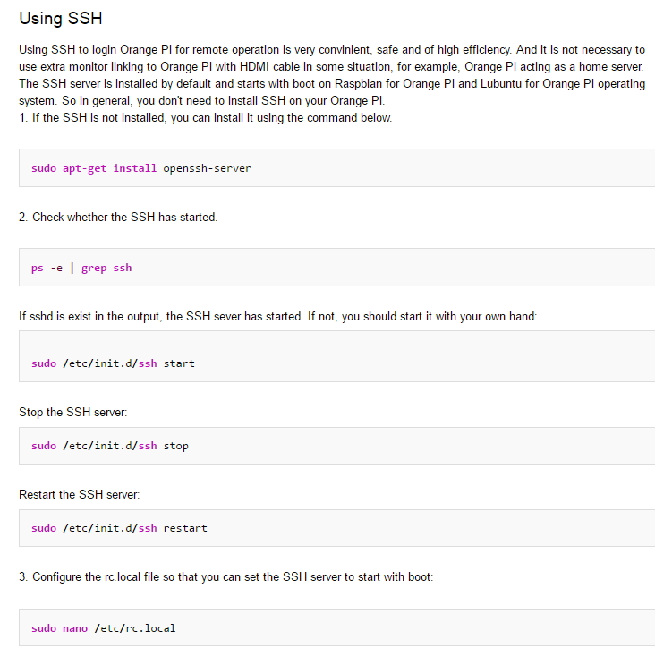

Radxa Rock Setup With LUBUNTU, Dual boot image taken from radxa site.
Prebuilt images page
Link.
Radxa Rock Setup With Rabian.
The image is downloaded from
http://dl.radxa.com/rock_pro/images/rabian/. Itself
should contain the tool for flashing the rock board. The rock board needs to be connected with Host PC with a micro USB Cable. Then enter
to loader mode by pressing recovery button when starting or restarting. The loader is look like as follows::
First it was in chinese language, you amy need to set it to english. But at the end I did not use this tool. I used following tool as follows.
Official
this and
this Page describes information on how to install Linux Image on Radxa board. It is needed to
install the driver manually for the first time. Then install
AndroidTool_Release_v2.3.zip tool to load the Rabian image.
This page has some tools to work with the board.
The Rabian Image downloaded from official page was not running properly, I downloaded another nightly Image from Following link::
http://build.radxa.com/rabian/nightly/rock_pro/
The source code is also here. Found this
Link from the community page.
Present status till 27-7-2016. build.radxa.com and talk.radxa.com is down. The main site is alive.
Also the GIT, dl.radxa.com and some other chinese sites are alive yet. could not found
nightly builds. There are supports for rockchip based devices on the web as:
Boot Ubuntu (Linux) or Android from an SD Card on Rockchip RK3288 Devices
linux-rockchip.info
I downloaded all files from the Radxa GIT site in
(Transcend 500)Q:\RADXA GIT\.
Check the Rabian apt-get update and upgrade commands leads to link http://apt.radxa.us/...
My Radxa Rock RK3188 linux image uses lightdm as desktop manager. We can stop lightdm by command
service lightdm stop .
Finally we disable the lightdm service parmanently. We did applied
sudo systemctl disable lightdm.service command, which internally run a command
/usr/sbin/update-rc.d lightdm disable that shows a message like
Removed symlink /etc/systemd/system/display-manager.service .
List only services :
systemctl list-units --type=serice or
systemctl list-units --type=service > services.txt then I applied scp command to get the file from remote machine as
sudo scp -P 3231 rock@180.234.12.125:/home/rock/services.txt /home/aronno .
lsb. Linux Standard Base
lsb_release command was not working in Rabian. lsb stands for Linux Standard Base. So we need to install lsb. It seems that
lsb is not a small package, It takes near 200MB. After installing lsb, the
lsb_release command is working. As the name LSB - Linux Standard Base is a tool set that should be common to all different linux distributions. So that a standard command set can be used within any linux distribution. It also includes C and C++ and other standard compilers sets and tools.
Orange PI Setup.
To know the present lubuntu version:
lsb_release -a
following command must be fetced for aptitude package manager:
sudo apt-get update
sudo apt-get upgrade
To setup Orange Pi One we downloaded an lubuntu Image from
Here . The other
distro links are also here. The main site for the various OS images is
mega .
We downloaded lubuntu image from mega. There are some troubles about using monitor through HDMI-DVI cable. Does not work. There are articles about to
change some config in BOOT partition of the SD card. To do it we need to insert the SD card into a Linux system and use a tool called sunxi-tools to
modify the configs. The problem is, I inserted the SD card in my RADXA system and RADXA OS is lubuntu 14.04 and it could not install sunxi-tools.
It may ave some issues with the lubuntu version. The command
sudo add-apt-repository [repo address] not working. To get it work we are installing following packages :
sudo apt-get install software-properties-common
sudo apt-get install python-software-properties
After installing tese packages the add-apt-repo... command is working. Now we are trying to install lubuntu-software-center trough apt-get.
These instructions came from
this link .
sudo apt-get install lubuntu-software-center
But till now not geting work with installing sunxi-tools on RADXA ROCK PRO.
Later we connected the orange pi with the ethernet network and installed sunxi-tools by command ::
sudo apt-get install sunxi-tools
This blog post described on how to apply sunxi tools
to perform orange pi with HDMI-DVI monitors.
sudo apt-get install sunxi-tools
sudo su
cd /media/boot
cp script.bin script.bin.bak
bin2fex script.bin script.fex
nano script.fex
hdcp_enable = 0
hdmi_cts_compatibility = 1
fex2bin script.fex script.bin
NOTE: that I have prevoiusly downloaded the latest kernel
boot image and
scrip.bin from
mega.
USER orangpi BROKEN
We had some issues that after running some update and upgrades and script.bin change, the orangepi cannot login with the user orangepi. But
it could login with root user pass:orangepi . Then I added a user named jibon by command
adduser jibon. It takes a password and prepares
locations and files for user jibon.
In lubuntu 15.04 we had to use the command
adduser jibon. Then it requires a password to create the new user. Then we apply another command
visudo. It is actually an env variable to open
/etc/sudoers file to add the user privilages.
newuser ALL=(ALL:ALL) ALL
Installing tightvncserver
Now we are trying to install and configure
tightvncserver. To search if it is already installed apply command:
apt search vnc or
apt search tightvncserver
if not installed then install it by
sudo apt-get install tightvncserver.
After installation we need to apply command
tightvncserver. It will ask for a password and then do some of its own setup. After this we
may need to stop vncserver by
vncserver -kill :1 . Now we have to edit
home/jibon/.vnc/xstartup: add these codes::
!/bin/sh
xrdb $HOME/.Xresources
xsetroot -solid black
/usr/bin/lxsession -s LXDE &
Then we can start the vncserver by following command::
vncserver :1
We are starting session from number
:1 . It can also be start from 0. When connecting from viewer, the port number should start from 5900.
For :1 the port number is 5901. If the orange pi IP Address is 192.168.20.100 then from vnc viewer, connecting address
is
192.168.20.100:5901 .
We had a problem with running a python Qt GUI program from vncviewer. The setup was in a RPi with lightdm minimul setup. It issues permission problem when trying to run the program as sudo. Very few documents are available online about this issue::
This Post advises to add
xhost + to
~/.bashrc script. But didnt solved the issues completely. Without sudo the program runs and shows every GUI components with fewer problems. But could not find any better suport on how to run GUI apps over vnc with sudo support. Otherhand complete desktop setup may run well...
Start VNC Server At Startup
Document source
Login to the Orange Pi , this page described on how to setup
remote access for OrangePi. First of all it shows that
openssh-server should start automatically.

The command ::
ps -e
shows every process running in the system. It says to check if
sshd exists in the process list as ::
ps -e | grep sshd or
ps auxw | grep sshd
More ps related commands can be found
here. To check whether openssh-server is
installed or not apply the command ::
apt search openssh-server
If not installed then install it. The above docs shows how to start or stop
sshd. Following method sows how to start ssh server
on startup.
SSH
Commands Link
SSH to a specific port other than 22 :
sudo ssh -p 3238 pi@144.48.2.11
I found that ssh server
sshd is running and I can log into OrangePi from putty using OrangePi's IP Address and port 22. But
/etc/rc.local does not contains any script to start ssh server::
jibon@OrangePI:~$ cat /etc/rc.local
#!/bin/sh -e
#
# rc.local
#
# This script is executed at the end of each multiuser runlevel.
# Make sure that the script will "exit 0" on success or any other
# value on error.
#
# In order to enable or disable this script just change the execution
# bits.
#
# By default this script does nothing.
# ** Overclock to 1.728 GHz
#echo 1728000 > /sys/devices/system/cpu/cpu0/cpufreq/scaling_max_freq
echo 0 > /proc/sys/kernel/hung_task_timeout_secs
dmesg -n 1
exit 0
jibon@OrangePI:~$
May be it is started by only putting
ssh in the
/etc/init.d/ location.
Armbian Setup Feb-17-17
Armbian is debian based distribution for ARM based processors. Looks like more lightweight and manageable distribution with lightdm support. Docs are looking good. Lets see...
From
docs.armbian.com link to
Getting Started Guide .
We downloaded a nightly build
Armbian_5.26.170219_Orangepizero_Ubuntu_xenial_dev_4.10.0.img . The SD Card may be faulty sometimes during image writing or power related issues, SDFormatter software could be used repair the errors.
BALLISTIC(P):\K(SOFT)\win32diskimager-v0.8-binary\SDFormatterv4.zip
Apply the option as above image. Then use
win32diskimager to write the image.
Hand Written Notes
mjpg streamer
/Dropbox/ORANGE Pi/docs/img/mjpg streamer install.jpeg
MEGA Link of the linux images for orange pi
Many linux images are here. Try to download them all in some locations later.
Cloud Linux Server Setup at DigitalOcean
We have established a connection with a cloud linux server running Ubuntu 15.10 Wily through openssh. There are 2 users as ::
root Redhat1997 and aronno redhat1980 . Droplet Name: autopilot
IP Address: 45.55.217.83
Username: root
From putty login as
root@45.55.217.83 password: Redhat1997.
Or
aronno@45.55.217.83 password: redhat1980.
Or from linux:
ssh aronno@45.55.217.83.
After Installing Linux droplet, I noticed that 512MB memory is not sufficient. Sometimes it consumes memory by itself even no extra program is
running. May be UBUNTU 15.10 does consumes such memory. I used
htop to see memory usage as follows::
The information may come from
/proc/meminfo .
Installing::
sudo apt-get install python-minimal
sudo apt-get install python-sqlite
sudo apt-get install sqlite3
type
python in command line. It will enter to python interactive shell. Type
exit() to exit
from interactive shell.
Then type
sqlite3 to enter to sqlite shell. Type
.exit to exit.
After installing these packages check them from inside python shell::
rock@rabian-rock-pro:~$ python
Python 2.7.9 (default, Mar 1 2015, 13:48:22)
[GCC 4.9.2] on linux2
Type "help", "copyright", "credits" or "license" for more information.
>>> import sqlite3
>>> sqlite3.version
'2.6.0'
>>> sqlite3.sqlite_version
'3.8.7.1'
>>>
This is related to python programming. Go to python page in
/Dropbox/Python/Docs/python01.html.
NEXT TOPIC.
SITE ADDR